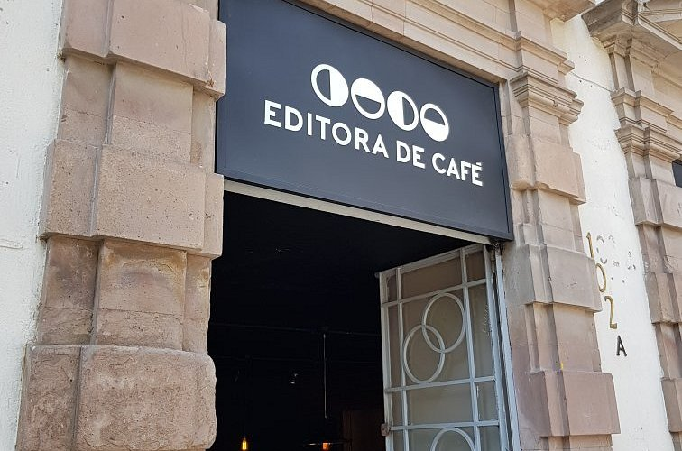
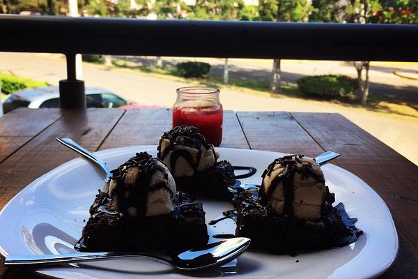
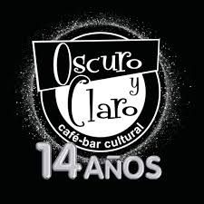

Es una cafeteria que se dedica principalmente a la vente de bebidas a base de café, almuerzos y postres.
Entre los cafés que ofrece podemos encontrar cafés filtrados, de preparacion fría como el cold brew y de especialidad
a base de expressos. Sus precios promedio son 200-400 pesos por persona.
Se encuntra ubicada en Guillermo Prieto 604-D, Alameda, 38050 Celaya, Gto.
Instagram

La editora de café es una cafetería que se especializa en el area de café, tiene un menu extenso con bocadillos dulces y salados y los consumidores destacan su amplia variedad de producos y le sabor de los mismos.
Se ubica en El Carmen SN-S, Celaya 38050 México
Facebook

Cafetería la union es una cafetería se caracteriza por ofrecer café gourmet y eventos artísticos.
Se encuentra en Benito León 211 E. Col. Trabajadores del IMSS, Celaya 38060 México
Sitio Web
La capilla es un luagr que ofrece garn variedad de bebidas con cafeina y sin, asi como frappes, postres y baguettes. Los clientes detacan la gran atención y
Se encuentra en Calle Francisco i. Madero 205, Celaya 38000 México
Facebook

La cafeteria oscuro y claro ofrece una cafeteria a la vez que un bar. Gran sitio para vsistar
Se encuntra en Avenida Las Fuentes 608a, Celaya 38040 México
Facebook
Benne Kaffe & Bubble Tea más que una cafetería e sun sitio donde se venden este tipo de beidas, como el té, café. frapees, cocteles sin alcohol, bebidas refrescantes, lacteos y postres variados
Se encuentra en Calle Álvaro Obregón No. 361 Entre Aztecas y Aguilar y maya, Celaya 38050 México